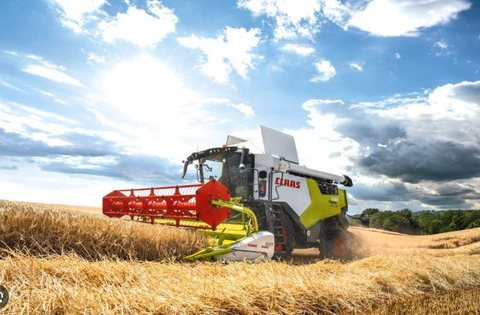
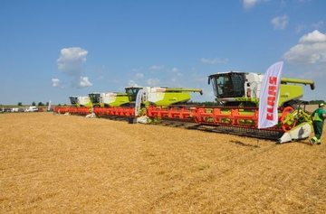
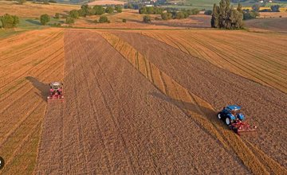
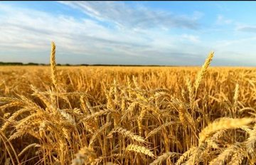
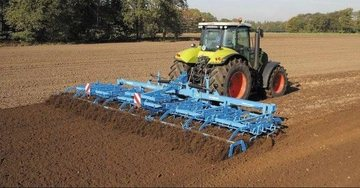
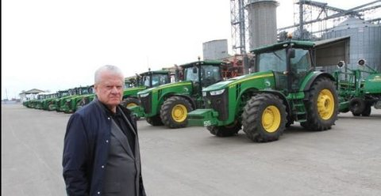
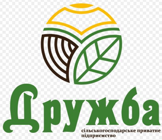
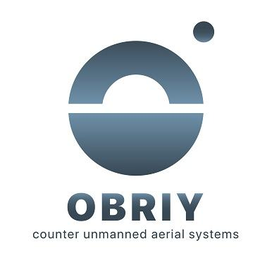
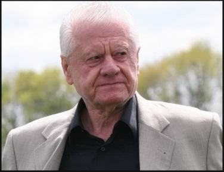

Отримайте безкоштовну
консультацію щодо співпраці
Поля форми: Ім’я, Телефон, E-mail.
30+ років досвіду роботи в аграрній
сфері.
Сучасний парк сільськогосподарської
техніки.
Вирощування зернових, олійних і
технічних культур.
Ефективні технології обробітку землі.








👤 Леонід Григорович Яковишин – український аграрій, Герой України, генеральний директор ТОВ «Земля і воля». Понад 30 років розвивав підприємство, зробивши його одним із найбільших аграрних господарств України. Під його керівництвом компанія впроваджувала сучасні технології вирощування зернових і олійних культур, зберігала та розвивала сільськогосподарські традиції.